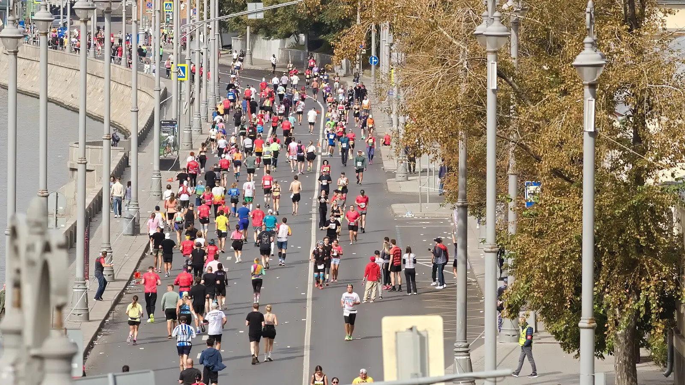

Tausende Rennen in Deutschland, Österreich, der Schweiz und Südtirol – nach Sportart, Strecke und Umkreis gefiltert. Aussuchen, anmelden, loslegen.
Tippe auf eine Sportart und spring direkt in die gefilterte Liste.
Keine Konten, keine Umwege – die Anmeldung läuft direkt beim Veranstalter.
Sportart, Strecke, Datum, Umkreis um deinen Ort – oder einfach Suchbegriff eintippen.
Alle Strecken einer Veranstaltung auf einen Blick, mit Kalender-Eintrag und Teilen-Link.
Ein Klick führt zur offiziellen Veranstalterseite – nie zu einem Zwischenhändler.
Dein nächstes Rennen steht schon in der Liste. Such es dir aus.
Zur Event-Liste→